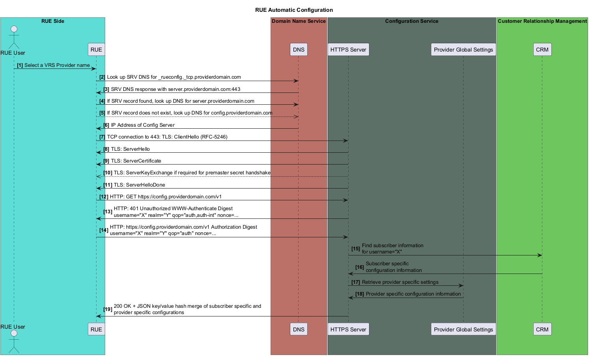

@startuml
skinparam maxAsciiMessageLength 8
title RUE Automatic Configuration
box "RUE Side" #5fddd6
actor "RUE User" as RUEUSER
participant "RUE" as RUE
end box
box "Domain Name Service" #bb7068
participant DNS
end box
box "Configuration Service" #5c7068
participant "HTTPS Server" as CONFIGSERVER
participant "Provider Global Settings" AS PROVIDERSETTINGS
end box
box "Customer Relationship Management" #6fc65f
participant "CRM"
end box
autonumber "<b>[0]"
RUEUSER -> RUE: Select a VRS Provider name
RUE -> DNS: Look up SRV DNS for _rueconfig._tcp.providerdomain.com
DNS -> RUE: SRV DNS response with server.providerdomain.com:443
RUE -> DNS: If SRV record found, look up DNS for server.providerdomain.com
RUE -->> DNS: If SRV record does not exist, look up DNS for config.providerdomain.com
DNS -> RUE: IP Address of Config Server
RUE -> CONFIGSERVER: TCP connection to 443: TLS: ClientHello (RFC-5246)
CONFIGSERVER -> RUE: TLS: ServerHello
CONFIGSERVER -> RUE: TLS: ServerCertificate
CONFIGSERVER -->> RUE: TLS: ServerKeyExchange if required for premaster secret handshake
CONFIGSERVER -> RUE: TLS: ServerHelloDone
RUE -> CONFIGSERVER: HTTP: GET https://config.providerdomain.com/v1
CONFIGSERVER -> RUE: HTTP: 401 Unauthorized WWW-Authenticate Digest\nusername="X" realm="Y" qop="auth,auth-int" nonce=...
RUE -> CONFIGSERVER: HTTP: https://config.providerdomain.com/v1 Authorization Digest\nusername="X" realm="Y" qop="auth" nonce=...
CONFIGSERVER -> CRM: Find subscriber information\nfor username="X"
CRM -> CONFIGSERVER: Subscriber specific\nconfiguration information
CONFIGSERVER -> PROVIDERSETTINGS: Retrieve provider specific settings
PROVIDERSETTINGS -> CONFIGSERVER: Provider specific configuration information
CONFIGSERVER -> RUE: 200 OK + JSON key/value hash merge of subscriber specific and\nprovider specific configurations
@enduml